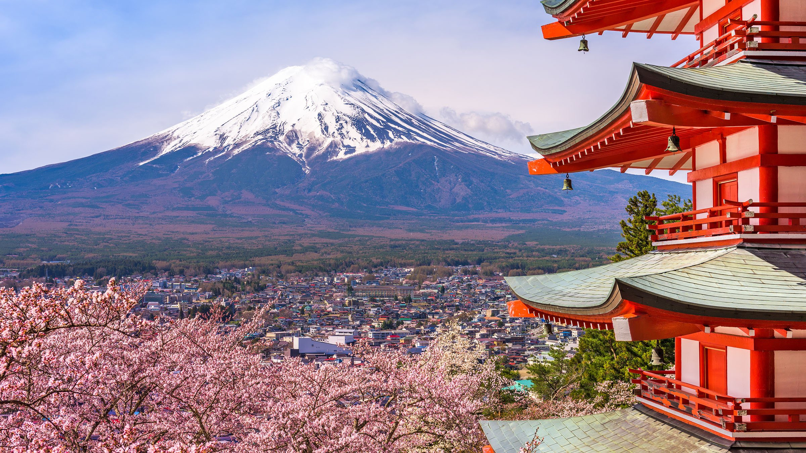

Medio ambiente

Importancia

El medio ambiente natural, medioambiente natural o entorno natural es el conjunto de componentes
físicos, químicos y biológicos externos con los que interactúan los seres vivos.
Dicho entorno abarca la interacción de todas las especies vivas, el clima, y
los recursos naturales que afectan la supervivencia humana y la actividad económica.
Se pueden distinguir como componentes del medio ambiente:
Unidades ecológicas completas que funcionan como sistemas naturales,
incluida toda la vegetación, los microorganismos, el suelo, las rocas,
la atmósfera y los fenómenos naturales que ocurren dentro de sus límites y su naturaleza.
Saber más
El espacio donde se desarrolla la vida en este momento con todos los seres vivos y
sus componentes naturales.
Ese entorno que rodea condicionando la vida de la sociedad
y que está siendo modificado cada día por actividades inconscientes del hombre.
Es ese hogar conocido como Medio Ambiente.
Por esta razón, el hombre debe comprender, que depende hoy más que nunca de este sistema
para la supervivencia en el planeta. Ya que el mismo brinda cantidades de servicios ambientales
para el desarrollo social, económico y cultural.
Saber más
· Separa la basura.
· Usa productos que puedan reutilizarse.
· Apaga las luces.
· Consume frutas y verduras ecológicas.
· Evita dejar los aparatos enchufados.
· Cierra los grifos correctamente.
· Utiliza el termostato.
· Muévete en transporte público.